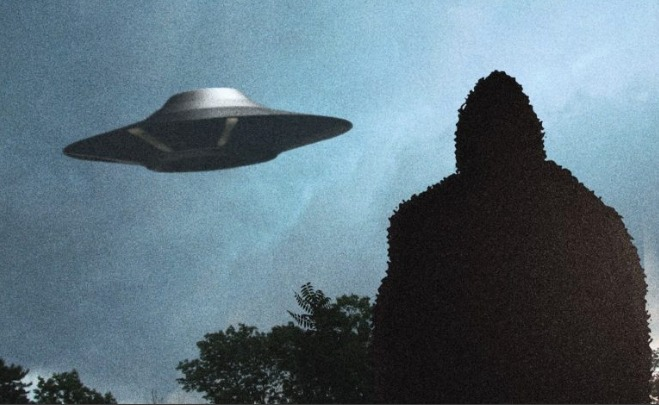

Immediately after Bigfoots appeared, "Shadow People" also appeared, and even a huge triangular UFO appeared → This mystery was solved.

(Image source: https://www.joshuacutchin.com/single-post/2020/05/08/Its-here )
Article creation history
(2022-04-09) Added clarification section (2020-11-29) Added audio transcription (auto-generated). (2018-04-14) Added a more detailed video on this matter. (2017-01-27) Created.Past article section
▼Click to Expansion
Shadow People also appeared right after many Bigfoots appeared, and even a giant triangle UFO appeared (overall). (2017-02-02)Introduction
- Mike Clelland and Nick Redfern present a podcast in which they critique the ETH theory (UFOs are alien vehicles) based on a variety of testimonials.Excerpt
From 56:50. A story about a woman in Canada (of Indian descent). A friend of hers passed away. She was performing a mourning ceremony (probably not related to a funeral and not involving the body) by beating a drum inside a Tipi (a conical tent used by the Indians), according to Indian tradition. Then she noticed that someone was pushing on the fabric of the tent from the outside. Strangely, I went outside the tent and found five Bigfoots there. In a panic, she went back inside the tent and continued to play the drums loudly. Hoping that the Bigfoot would leave at the sound. Eventually, Bigfoot and the others left. Then she noticed that someone was pushing on the fabric of the tent from the outside. Strangely, he went outside the tent and found five Bigfoots. She went back inside the tent and continued to beat the drums loudly. Hoping that the Bigfoot would leave at the sound. Eventually, Bigfoot (the family) left. When Bigfoot left, she went back inside. Her children were making a big fuss. The child said he had seen Shadow People in the house and was very scared. So she decided to inform her husband who was working in the garage (away from the house). As she was walking to the garage, she saw a huge triangular UFO hovering just above the trees right next to the garage (so low that it almost touched the tops of the trees). She informed her husband, and he witnessed the UFO with her. The UFO was translucent like a holographic image.Podcast Video（2:00:17）
・Nick Redfern on the Extra Terrestrial Hypothesis (ETH)Comments
This case shows that Shamanism, Bigfoot, Shadow People, and UFOs are closely interrelated, and if true (which is probably the case since many other similar cases have been reported), the theory that UFOs are high-tech alien mecha will be greatly challenged. This is a shaky case study. (2017-01-27)
(Added 2018-04-14 below)Introduction
. I saw a video of Mike Clelland talking about this in more detail, so I'll add that.Particularly applicable
. Around 1:40:00.Video (2:00:22)
・04-11-18 Mike Clelland, Stories from the Messengers: Owls, UFOs and a Deeper Reality (2018-04-14)
Preface
I will add an audio transcript automatically generated by Youtube as it is a valuable testimonial.audio transcript
(2020-11-29)▼Click to Expansion
there's a woman named 96:48 Susan McLeod and she this is interesting 96:51 cuz she cuz like the core story the 96:54 sort of big story of the book doesn't 96:55 have any owls in it but she had been 96:58 seeing owls around their house she has 97:00 wonderful owl stories where she's a 97:01 healer she's one of these wonderful 97:03 shamanic radiant people she had someone 97:06 over their house and and and these two 97:08 people had just lost their spouses you 97:10 know some people the death and they said 97:12 let's they went into the backyard and 97:13 prayed and they said like like my 97:17 husband loved owls and the other person 97:19 said my wife loved owls let's see an owl 97:21 then boom and our lands on a branch and 97:24 they walked right up to it and they took 97:26 pictures of it and they've got these 97:27 amazing pictures like close like right 97:29 so they said they sat there for half 97:30 hour and and cried and and so this is on 97:34 the land this is the house basically so 97:36 she's owls stories that are associated 97:38 but here's the story she there were a 97:41 friend of her died she had a close 97:43 friend who'd had died and she was part 97:45 Native America where she's Canadian so 97:47 she has part of the share trace her 97:48 lineage back to the Mi'kmaq tribe which 97:50 is a tribe in northern Maine and that 97:53 part of Ontario and Quebec so she's an 97:56 Ontario she 98:00 it has a teepee on a property so she as 98:04 part of the grieving ceremony she burned 98:07 some sage led a fire 98:08 sang pounded the drum she's in the 98:10 teepee it's late at night and her she 98:15 feels like something brush against the 98:16 side of the teepee it's big she's like 98:18 oh my god there's a bear out there like 98:20 and so she peeks out the teepee she's 98:23 like I I'm gonna I'm gonna walk back to 98:25 the house she steak takes a few steps 98:27 out of the tepee and right in the path 98:29 is a family of five sasquatch big 98:32 Sasquatch like right in the path and 98:34 they're staring at her and there's light 98:36 they lock eyes and she has this moment 98:37 of like is this my time am i dead did I 98:42 die and then she's like backs back up 98:44 into the tepee and just like holy crap 98:45 was like and then it really scares him 98:47 like oh my goodness so she bangs a drum 98:48 really loud she puts a bunch of wood on 98:49 the fire and then she cautiously peeks 98:51 out of the tepee and looks on the path 98:53 and there's nobody there so she she runs 98:55 back up to the house but and when she 98:56 does the same five family of Sasquatch 99:00 are now down away downhill across this 99:03 little creek and they're standing there 99:04 in this pose and she sounds like a pose 99:07 of a of a family portrait there's three 99:09 kids in front and two big adults in the 99:11 back and that's her family two adults 99:14 three kids she gets to the house she 99:15 wants to tell everyone that I just 99:16 solved five Sasquatch in the art she 99:18 opens the door and the kids are like mom 99:19 something's going on in the house 99:21 everything's going crazy there's these 99:22 like shadow beings in the house and so 99:24 they tell these like dark shadow beings 99:26 are zipping around the house and and she 99:29 she says she's like him she's like the 99:31 medicine woman of the neighborhood so 99:33 she burns the sage she declares that 99:35 these they're they have to leave she 99:38 can't tell her kids right how does she 99:40 tell her kids her kids are all freaked 99:41 out so she burns sage and she's got it I 99:43 gotta tell my partner so she runs down 99:44 and her her partner is in the garage and 99:48 he's got a woodworking thing there so 99:50 she runs down and she wants to tell him 99:52 about the Sasquatch that she tries to go 99:54 in but it's the door's locked 99:55 not only is the door locked but he's 99:56 like jammed wood into the door like so 99:59 he's so he can't hear so like just like 100:01 let me in and he's like what the hell is 100:03 going on what what does it what there 100:06 are these shadow beings here in the 100:07 garages are zooming around so she's like 100:08 oh my god here - so she 100:12 she's like what do I so she steps away 100:14 from the garage for a second and she 100:17 looks up to the stars and she she prays 100:19 she prays to God she's Catholic 100:21 she was raised Catholic she prays to God 100:23 she says I need answers I need help and 100:26 at that moment she's looking up with the 100:29 Stars and this giant triangle is 100:31 blotting out the stars directly above 100:33 her and there's this giant UFO triangle 100:36 and she said it gets lower it's right 100:38 above the trees above her driveway and 100:40 her husband's there he sees it too and 100:41 it's it's it's not physical in like a 100:46 concrete kind of way it's like flitting 100:49 on and out of reality like it's like a 100:50 little like a video that's on static and 100:54 she's like oh my gosh these are like 100:56 this is all related so the the sure 101:01 senses the shadow beings aren't like 101:04 members of all that's not something you 101:06 see in a haunted house and the Sasquatch 101:08 aren't big hairy apes that live in the 101:10 woods and the flying saucer or the 101:13 triangle UFOs aren't aren't a spaceship 101:18 from another planet this is all somehow 101:20 inner woven and this is out of sight on 101:23 our property where she has there are so 101:26 many beautiful owl stories I just could 101:28 only tell a few in the book but um so 101:31 this is what so here's a woman her she 101:34 loves owls she has this experiences and 101:36 she's also helping people she's doing a 101:38 lot of volunteer work helping people 101:39 using her psychic skills to you know if 101:43 it's to be believed the way she 101:44 describes to help people like get over 101:46 serious illnesses
(2022-04-09 begin)Preface
- As of 2020-11-29, there was no prospect of solving the mystery of this case. In other words, the case appeared to be so complex and bizarre as to be unmanageable due to the intertwining of the following elements. - Shamanism - Bigfoot - Shadow People - UFO (close-range encounter) The case seemed to be so complicated and bizarre that it was beyond our ability to handle it. - However, in hindsight, the solution seems to be quite simple.The cause of this series of puzzling incidents
- However, because of the "EMF anomalies"(*1) around the family (*2), the whole family suffered from temporary disorientation at the same time and only saw various hallucinations. - In fact, there is no physical evidence of any kind; no photographs of the UFO were taken, no evidence of Bigfoot No body hair or footprints were collected.(*1)
ref: Simplified illustration of what UFOs are. (Version: 2022-04-09) - http://news21c.blog.fc2.com/blog-entry-19331.html(*2)
- There are other possibilities besides EMF anomalies in this case. For example, it is possible that hallucinogenic mushrooms were accidentally mixed in with the family's food. However, since the same thing is true of consciousness disorders, I will use "EMF abnormality" as a representative example.Thanks
Translated with www.DeepL.com/Translator (free version) (2022-04-09 end) (2022-04-10 : traslation)
First Published
The article on which the translation is based
Bigfoot が多数出現した直後、Shadow People も出現、さらに巨大三角形 UFO までも出現 → この謎を解く (2022-04-09)